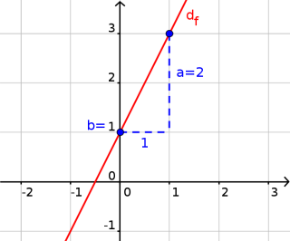
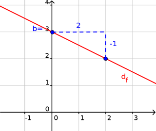

Propriété : La courbe représentative d'une fonction affine est une droite.
Exemple 1 :
Soit $f(x)=2x+1$.
La droite de $f$ est tracée ci-dessous.

Propriété : Soit $f(x)=ax+b$. La droite de $f$ coupe l'axe des ordonnées en $y=b$ et la pente de la droite est donnée par $a$ : quand on avance de $1$ en abscisse, on avance de $a$ en ordonnée.
Exemple 2 :
Soit $f(x)=-\frac{1}{2}x+3$.
La droite de $f$ est tracée ci-dessous.

Propriété :
Soit $f(x)=ax+b$ avec $a=\frac{\Delta y}{\Delta x}$.
Quand on avance de $\Delta x$ en abscisse, on avance
de $\Delta y$ en ordonnée.